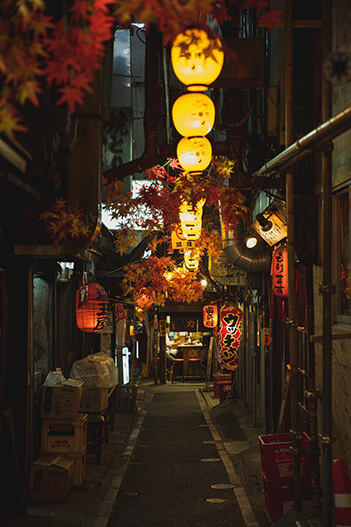
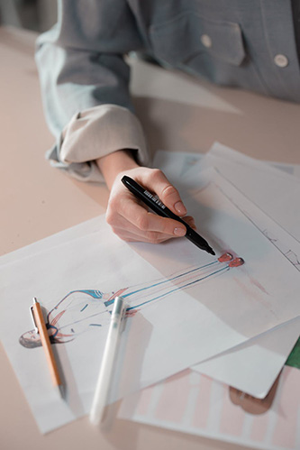
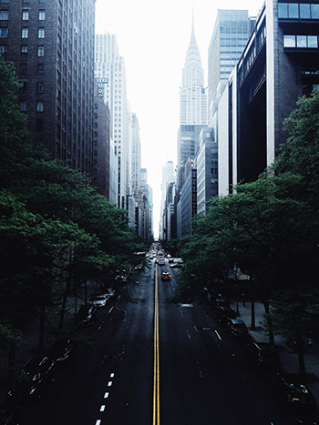

Dewan Gurung is a first-year college student in the multimedia production program focused on (Animation, Coding, Graphic Design). He was born and raised in Nepal before moving to Canada, in his spare time, he loves watching anime, movies and video games. He was inspired by the animation, cutscene and the story in anime and video games.
MY hobbies are learning piano, drawing, playing games and watching anime. I doesn’t play any sport, but I loves baseball. And my favourite music is Nepali music, Indian music and some K-pop and Japanese music, but I will listen to any music if i like it. My favourite place to travel is Japan.
The first time I starts drawing was in middle school, I was inspired by the Anime characters. And the first time I published something in social media was his first drawing of an Anime character. The things that make me laugh is a TV show call the impractical joker and funny video in YouTube.
 